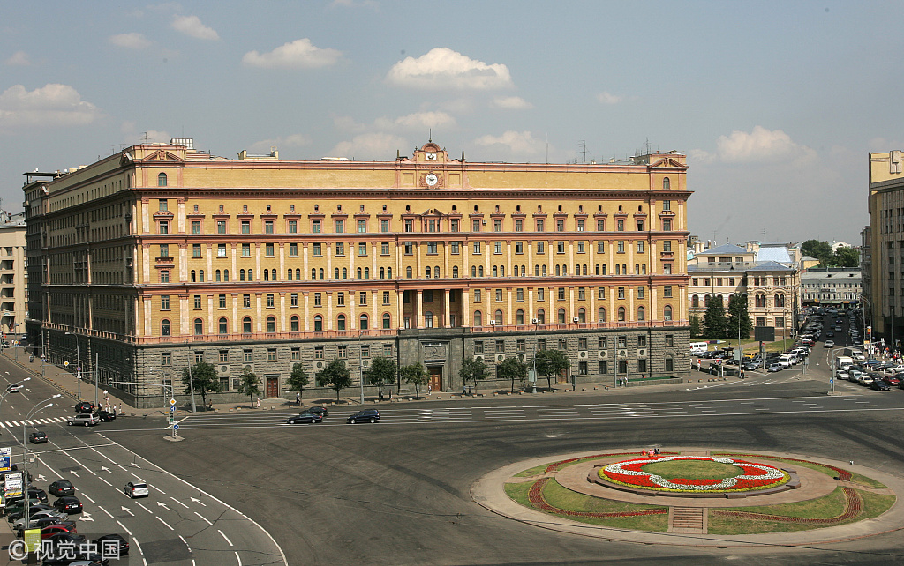
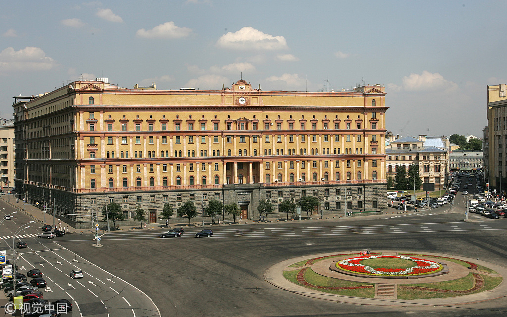
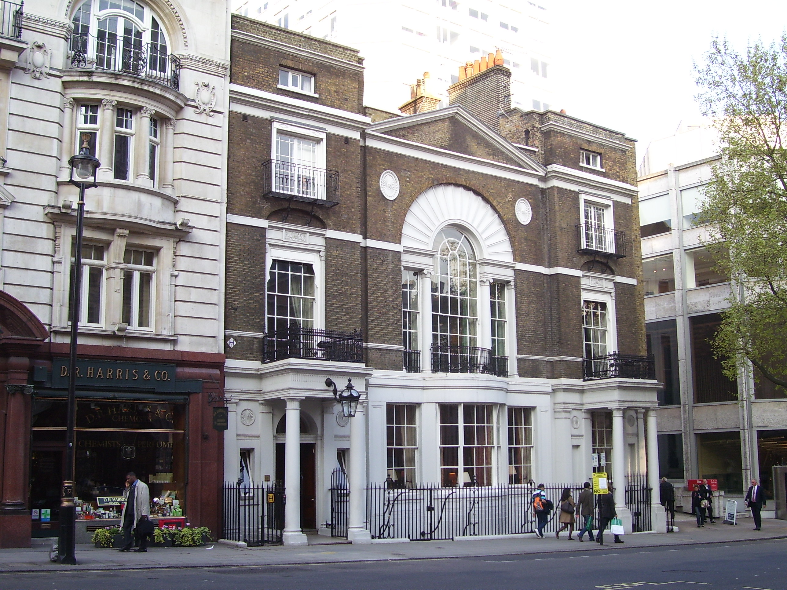
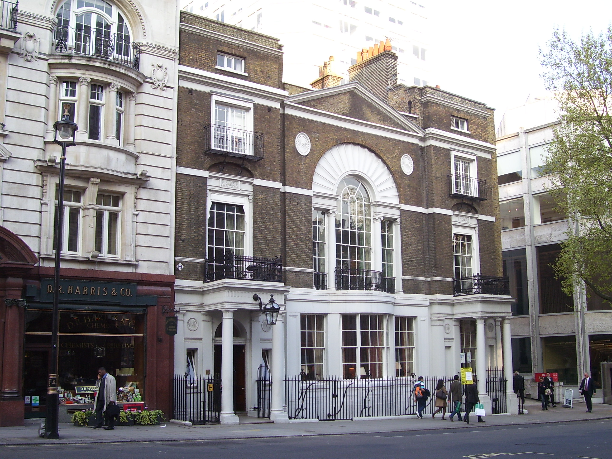
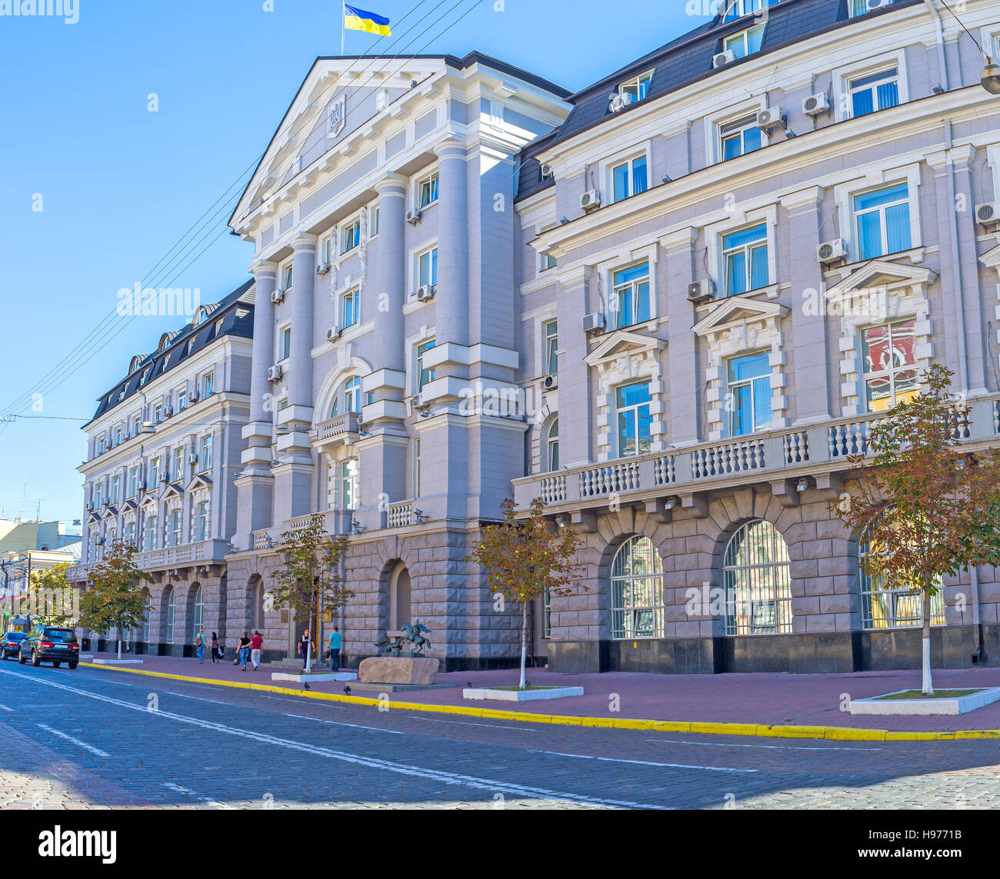
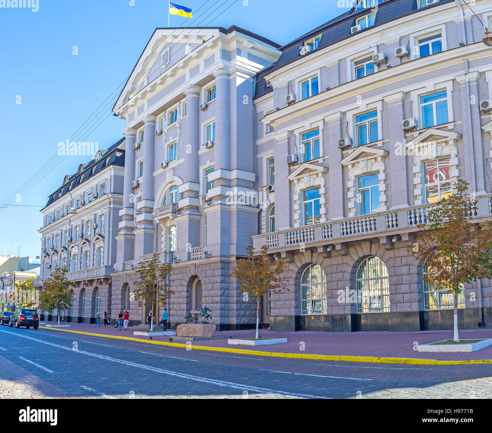

Spy agency buildings and sites of cultural significance related to our class discussions (in alphabetical order by country (Germany, Lithuania, Russia, Turkey, the UK, Ukraine, the US)).
Fig.1. Germany: Former HQ of Stasi (East German Secret Police),
now Museum and archive where citizens can see their secret police files. Berlin, Germany
 Fig.2. Lithuania: Former HQ of the KGB, now Museum of Occupations and Freedom Fights. Vilnius, Lithuania
Fig.2. Lithuania: Former HQ of the KGB, now Museum of Occupations and Freedom Fights. Vilnius, Lithuania
 Fig.3. Russia: Solovki Stone. Monument to Victims of Political Terror (by the KGB) next to the FSB Building in Moscow, Russia (former KGB HQ), the stone brought from the Solovki concentration camp in Northern Russia, a camp that established a pattern for the GULag system of slave labor camps

Fig.4. Russia: The FSB Building in Moscow, Russia (former KGB HQ), the agency responsible for both espionage and domestic political terror, directly answerable to the dictator.
Fig.3. Russia: Solovki Stone. Monument to Victims of Political Terror (by the KGB) next to the FSB Building in Moscow, Russia (former KGB HQ), the stone brought from the Solovki concentration camp in Northern Russia, a camp that established a pattern for the GULag system of slave labor camps

Fig.4. Russia: The FSB Building in Moscow, Russia (former KGB HQ), the agency responsible for both espionage and domestic political terror, directly answerable to the dictator.
 Fig.5. Russia: Russian Embassy in Washington DC and the tunnel underneath it.
Fig.6. Turkey/France: The Orient Express.
Fig.5. Russia: Russian Embassy in Washington DC and the tunnel underneath it.
Fig.6. Turkey/France: The Orient Express.
 Fig.7. UK: GCHQ HQ. The UK equivalent of the NSA.
Fig.7. UK: GCHQ HQ. The UK equivalent of the NSA.
 Fig.8. UK: MI6 HQ (Since 1994), appears in Bond films, a shot from Skyfall (2012)

Fig.9. UK: Boodle's gentlemen's club (a site where MI 6 used to recruit employees).
Fig.8. UK: MI6 HQ (Since 1994), appears in Bond films, a shot from Skyfall (2012)

Fig.9. UK: Boodle's gentlemen's club (a site where MI 6 used to recruit employees).
 Fig.10. UK: Bletchley Park

Fig.11. Ukraine: SBU HQ in Kyiv. SBU is the main internal security agency in Ukraine
Fig.12. US: The original OSS/CIA headquarters above was located at 2430 E Street NW, on the site of the US Navy Bureau of Medicine and Surgery. CIA headquarters was relocated to a new building at Langley, VA, in the 1960s. The front part of the building shown was demolished for freeway construction in the 1970s. Its southern remainder and two buildings behind are supposedly still in use by the CIA and State Department intelligence and counterterrorism. In 1960 gates were left open, now the site is guarded (source https://cryptome.org/eyeball/ciaest/ciaest-birdseye.htm.
Fig.10. UK: Bletchley Park

Fig.11. Ukraine: SBU HQ in Kyiv. SBU is the main internal security agency in Ukraine
Fig.12. US: The original OSS/CIA headquarters above was located at 2430 E Street NW, on the site of the US Navy Bureau of Medicine and Surgery. CIA headquarters was relocated to a new building at Langley, VA, in the 1960s. The front part of the building shown was demolished for freeway construction in the 1970s. Its southern remainder and two buildings behind are supposedly still in use by the CIA and State Department intelligence and counterterrorism. In 1960 gates were left open, now the site is guarded (source https://cryptome.org/eyeball/ciaest/ciaest-birdseye.htm.